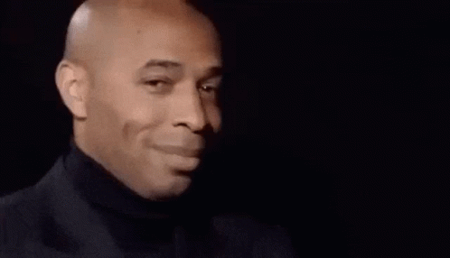

VS
THE SEMI-FINALS ARE SET
VS
The Champions League semi-finals are here, with Arsenal facing PSG and Barcelona taking on Inter Milan in two high-stakes clashes.
Arsenal powered past Real Madrid 5-1 on aggregate.
“This is the biggest game the Emirates has seen,” said Mikel Arteta.
Analyst Troy Deeney added, “Arsenal will have too much for PSG.”
PSG edged out Aston Villa 5-4, with Ousmane Dembélé leading the scoring.
On the other side, Barcelona advanced after beating Dortmund 5-3 overall.
Coach Hansi Flick confirmed Szczęsny will remain in goal despite ter Stegen's return.
Inter Milan knocked out Bayern Munich 4-3, led by Lautaro Martínez, who's scored 8 goals this tournament.
First legs are set for April 29-30; second legs on May 6-7. The final will be held in Munich on May 31.
